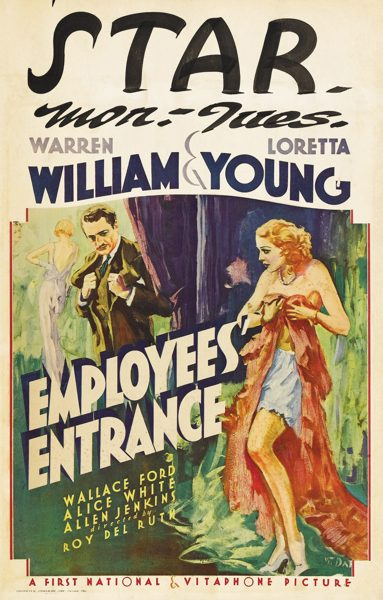

Employees' Entrance
Starring: Warren William, Loretta Young, Wallace Ford
Director: Roy Del Ruth
Writer: Robert Presnell Sr
Producer: Lucien Hubbard
Employees' Entrance is a 1933 pre-Code film about the devious manager of a New York department store (Warren William) and his romantic involvement with a reluctant new employee (Loretta Young). It was directed by Roy Del Ruth. In 2019, the film was selected by the Library of Congress for preservation in the National Film Registry for being "culturally, historically, or aesthetically significant".
Trivia
- Warren William was not originally cast in the lead role; he replaced Hale Hamilton, who ended up playing a smaller part.
- Edward G. Robinson had also been offered the lead.
- Pictures at the time that silent films were giving way to sound pictures, by the time of Employees' Entrance her star had faded when the flapper craze abated.
Previous Showings
8 Runs • 7 Festivals
5,514 tickets sold
All runs on record (8):
- September 3 - 6, 1994 · 1,580 ticketsw/ Baby Face
- October 13 - 15, 1999 · 371 ticketsFavorites: Fall 1999 Seriesw/ Taxi!
- December 16, 2000 · 250 ticketsLoretta Young: Holiday 2000w/ The House of Rothschild
- March 5 - 6, 2003 · 414 ticketsFilm Noir and Pre-Codew/ Beauty and the Boss
- August 25 - 26, 2005 · 739 ticketsSummer 2005w/ Baby Face
- July 14 - 16, 2009 · 487 ticketsSummer 2009w/ Taxi!
- February 14 - 16, 2012 · 595 ticketsWinter 2012w/ The Devil to Pay
- August 31 - September 3, 2013 · 1,078 ticketsSummer 2013w/ Lady for a Day